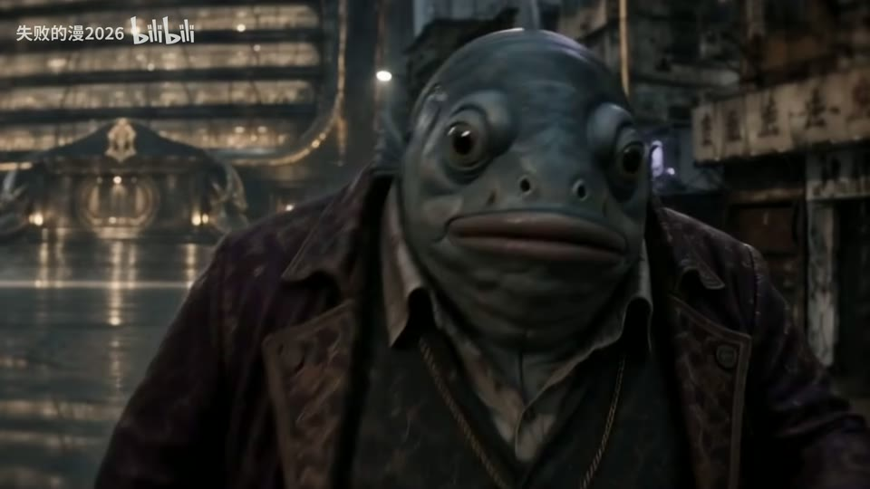

H24 / 76—112秒
【三代恶灵骑士/高燃/混剪】前方高能！红蓝地狱烈火燃烧着我们不屈的复仇之魂！
76秒蓝焰骷髅、88秒蓝火轮胎、94秒链条蓝而橙色地面保留；95.262秒手臂转暖，97.18秒背景红而头焰仍蓝。
迁移提问：观众能指出谁在攻击、朝哪边、是否击中吗？哪些是原素材的动作，哪些才是新增剪接或合成？
手法专题 / 规则、用途与取舍
让能量、方向或主次可见；清楚的字芯和主体轮廓应保留。
战斗、魔法、科技、梦境、舞台、标题强调、人物焦点。
只加大模糊半径；光源不影响周围环境；发光覆盖所有细节；把原片光效当新增。
①做清晰线/字/路径；②复制模糊作光晕；③按运动更新路径或衰减；④处理人物前后遮挡；⑤按场景调整色温和曝光。
示意光线易；准确跟踪、遮挡和空间溢光需处理。
基础机制已做13项原创演示，不等于本页所有复杂组合均已成片验证。
原机制演示 →H24 / 76—112秒
76秒蓝焰骷髅、88秒蓝火轮胎、94秒链条蓝而橙色地面保留；95.262秒手臂转暖，97.18秒背景红而头焰仍蓝。
迁移提问：观众能指出谁在攻击、朝哪边、是否击中吗？哪些是原素材的动作，哪些才是新增剪接或合成？

H39 / 57.057—84.084秒
57、63秒人物旁有发光方框，60秒肢体与粉点背景，66秒云海白色人形及网点，75秒可见黄橙不规则波形覆盖人物，78秒手部粉色轮廓，81秒眼镜附近紫光。仅概览判断形态，未验来源原片。
迁移提问：这一镜增加了什么新信息？删掉它，动机、情绪或因果会不会丢失？


AI40 / 0—30秒
工作台小生物、街道人物、湿地反射、远近城市建筑形成空间层次。
迁移提问：观众能指出谁在攻击、朝哪边、是否击中吗？哪些是原素材的动作，哪些才是新增剪接或合成？

AI38 / 112—136秒
武器触地伴红色电环，红刀光横扫发丝，人物落地持剑。
迁移提问：观众能指出谁在攻击、朝哪边、是否击中吗？哪些是原素材的动作，哪些才是新增剪接或合成？
用一条光线引导目光到人物眼睛，限制光晕不遮住表情。
交付时保留基础版与加效果版，并写“增加了什么意义、损失了什么清晰度”。
使用观察与复盘表 →